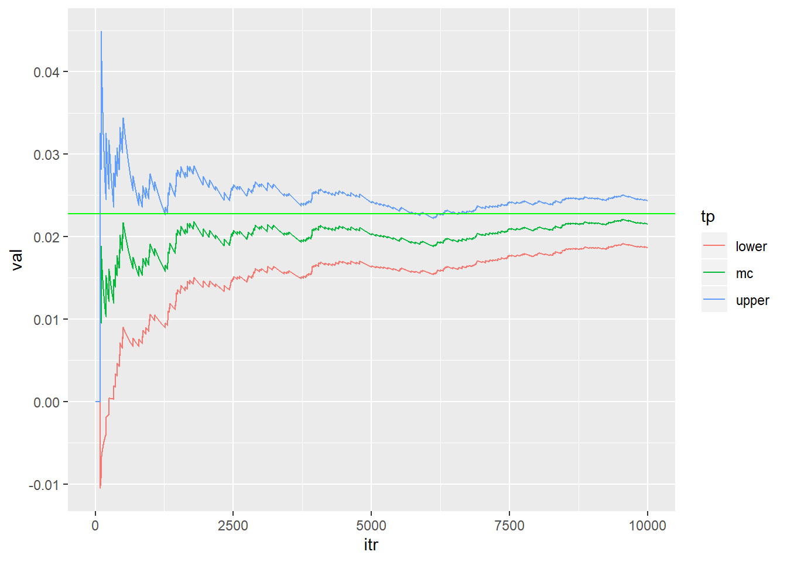
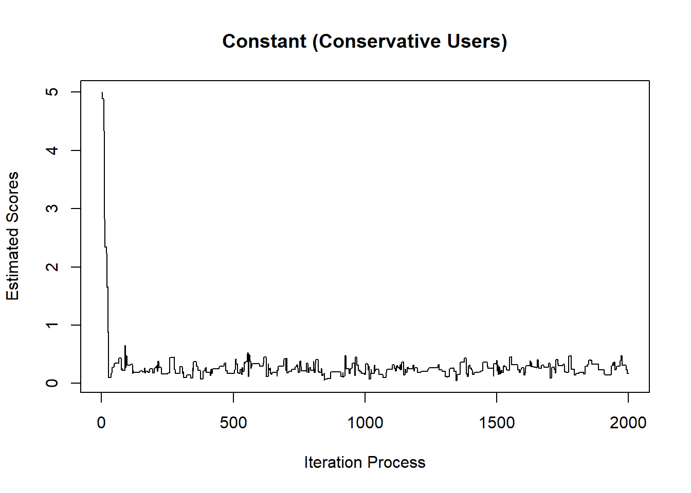

Chapter 6 Computing Techniques
Since GLMM can use EM algorithm in its maximum likelihood calculation (see McCulloch, 1994), it is practically useful to rehearse EM and other computing techniques.
6.1 Monte carlo approximation
Example: calculate the integral of \(p(z>2)\) when \(z \sim N(0,1)\). To use Monte Carlo approximation, we can have an indicator function, which will determine whether the sample from \(N(0,1)\) will be included into the calculation of the integral.
Nsim=10^4
indicator=function(x){
y=ifelse((x>2),1,0)
return(y)}
newdata<-rnorm(Nsim, 0,1 )
mc=c(); v=c(); upper=c(); lower=c()
for (j in 1:Nsim)
{
mc[j]=mean(indicator(newdata[1:j]))
v[j]=(j^{-1})*var(indicator(newdata[1:j]))
upper[j]=mc[j]+1.96*sqrt(v[j])
lower[j]=mc[j]-1.96*sqrt(v[j])
}
library(ggplot2)## Warning: package 'ggplot2' was built under R version 3.6.1values=c(mc,upper,lower)
type=c(rep("mc",Nsim),rep("upper",Nsim),rep("lower",Nsim))
iter=rep(seq(1:Nsim),3)
data=data.frame(val=values, tp=type, itr=iter)
Rcode<-ggplot(data,aes(itr,val,col=tp))+geom_line(size=0.5)
Rcode+geom_hline(yintercept=1-pnorm(2),color="green",size=0.5)## Warning: Removed 2 rows containing missing values (geom_path).
6.2 Importance sampling
Importance sampling has samples generated from a different distribution than the distribution of interest. Specifically, assume that we want to calculate the expected value of \(h(x)\), and \(x \sim f(x)\).
\[E(h(x))=\int h(x) f(x) dx = \int h(x) \frac{f(x)}{g(x)} g(x) dx \] We can sample \(x_i\) from \(g(x)\) and then calculate the mean of \(h(x_i) \frac{f(x_i)}{g(x_i)}\).
Using the same explane above, we can use a shifted exponential distribution to help calculate the intergral for normal distribution. Specifically,
\[\int_2^{\infty} \frac{1}{2 \pi} e^{-\frac{1}{2}x^2}dx = \int_2^{\infty} \frac{\frac{1}{2 \pi} e^{-\frac{1}{2}x^2}}{e^{-(x-2)}} e^{-(x-2)}dx \] The idea is that, we can generate \(x_i\) from exponential distribution of \(e^{-(x-2)}\), and then insert them into the targeted “expected (value) function” of \(\frac{\frac{1}{2 \pi} e^{-\frac{1}{2}x^2}}{e^{-(x-2)}}\). Thus, as you can see, importance sampling is based on the law of large numbers (i.e., If the same experiment or study is repeated independently a large number of times, the average of the results of the trials must be close to the expected value). We can use it to calculate integral based on link of the definition of expected value.
Nsim=10^4
normal_density=function(x)
{y=(1/sqrt(2*pi))*exp(-0.5*(x^2))
return(y)}
x=2-log(runif(Nsim))
ImpS=c(); v=c(); upper=c(); lower=c()
for (j in 1:Nsim)
{
ImpS[j]=mean(normal_density(x[1:j])/exp(-(x[1:j]-2)))
v[j]=(j^{-1})*var(normal_density(x[1:j])/exp(-(x[1:j]-2)))
upper[j]=ImpS[j]+1.96*sqrt(v[j])
lower[j]=ImpS[j]-1.96*sqrt(v[j])
}
library(ggplot2)
values=c(ImpS,upper,lower)
type=c(rep("mc",Nsim),rep("upper",Nsim),rep("lower",Nsim))
iter=rep(seq(1:Nsim),3)
data=data.frame(val=values, tp=type, itr=iter)
ggplot(data,aes(itr,val,col=tp))+geom_line(size=0.5)+
geom_hline(yintercept=1-pnorm(2),color="green",size=0.5)## Warning: Removed 2 rows containing missing values (geom_path).
6.3 Newton Raphson algorithm
The main purpose of Newton Raphson algorithm is to calculate the root of a function (e.g., \(x^2-3=0\)). We know that in order to maximize the MLE, we need to calculate the first derivatice of the function and then set it to zero \(\ell^{'}(x)=0\). Thus, we can use the same Newton Raphson method to help calculate the MLE maximization as well.
There are different ways to understand Newton Raphson method, but I found the method fo geometric the most easy way to explain.
Credit of this figure: https://www.math.ubc.ca/~anstee/math104/newtonmethod.pdf
Specifically, suppose that you want to calculate the root of a function \(f(x)=0\). We assume the root is \(r\). However, we do not that, and we randomly guess a point of \(a\). Thus, we can get a tangent line with slope of \(f^{'}(a)\) and a point of \((a,f(a))\). Since we know the slope and one of its points, we can write the function for this tangent line.
\[y-f(a)=f^{'}(a)(x-a)\] To calculate the \(x-intercept\), namely \(b\) in the figure, we can set \(y=0\), and get the following:
\[-f(a)=f^{'}(a)(x-a) \Rightarrow x (or, b)= a-\frac{f(a)}{f^{'}(a)}\] If there is significant difference of \(|a-b|\), we know that our orginal guess of \(a\) is not good. We better use \(b\) as the next guess, and calculate its tangent line again. To generalize, we can write it as follows. \[x_{t+1}=x_{t}-\frac{f(x_t)}{f^{'}(x_t)}\]
Okay, this method above is to calculate the root. For MLE, we can also use this method to calculate the root for the \(\ell ^{'}=0\). We can write it as follows.
\[x_{t+1}=x_{t}-\frac{\ell^{'}(x_t)}{\ell^{''}(x_t)}\] Often, \(x\) is not just a single unknow parameter, but a vector. For this case, we can write it as follows.
\[\beta_{t+1}=\beta_{t}-\frac{\ell^{'}(\beta_t)}{\ell^{''}(\beta_t)}\]
6.3.1 Calculate the root
\(x^3-5=0\)
Note that, this is obviously not a maximization problem. In contrast, it involves a function with zero. As we can see, we can think it as the first order of Taylor approximation. That is, \(f^{'}(x)=x^3-5=0\). As we can see the following plot, it converts very quickly.
f_firstorder=function(x){x^3-5}
f_secondorder=function(x){3*x}
x_old=1;tolerance=1e-3
max_its=2000;iteration=1;difference=2
c_iteration<-c() ## to collect numbers generated in the iteration process
while(difference>tolerance & iteration<max_its){
x_updated=x_old-(f_firstorder(x_old)/f_secondorder(x_old))
difference=abs(x_updated-x_old);
iteration=iteration+1;
x_old=x_updated
c_iteration<-c(c_iteration,x_updated)}
plot(c_iteration,type="b")
6.3.2 Logistic regression
Suppose we have \(n\) observation, and \(m\) variables.
\[\begin{bmatrix} x_{11} & x_{12} & x_{13} & ... & x_{1m}\\ x_{21} & x_{22} & x_{23} & ... & x_{2m} \\ ...\\ x_{n1} & x_{n2} & x_{n3} & ... & x_{nm} \end{bmatrix}\]
Typically, we add a vector of \(1\) being used to estimate the constant.
\[\begin{bmatrix} 1 & x_{11} & x_{12} & x_{13} & ... & x_{1m}\\ 1 & x_{21} & x_{22} & x_{23} & ... & x_{2m} \\ ...\\ 1 & x_{n1} & x_{n2} & x_{n3} & ... & x_{nm} \end{bmatrix}\]
And, we have observe a vector of \(n\) \(y_i\) as well, which is a binary variable:
\[Y = \begin{bmatrix}1 \\ 0 \\ 1 \\ 0 \\ 0 \\ 0 \\ ...\\ 1 \\ \end{bmatrix}\]
Using the content from the MLE chapter, we can get:
\[\mathbf{L}=\prod_{i=1}^{n} p_i^{ y_i}(1-p_i)^{(1-y_i)}\]
Further, we can get a log-transformed format.
\[log (\mathbf{L})=\sum_{i=1}^{n}[y_i log (p_i) + (1-y_i) log(1-p_i)]\] Given that \(p_i=\frac{e^{\beta_0+\beta_1x_1+...+\beta_nx_n}}{1+e^{\beta_0+\beta_1x_1+...+\beta_nx_n}}=\frac{e^{\beta^Tx}}{1+e^{\beta^Tx}}\), we can rewrite it as follows:
\[log (\mathbf{L})=\ell=\sum_{i=1}^{n}[y_i log (\frac{e^{\beta^Tx_i}}{1+e^{\beta^Tx_i}}) + (1-y_i) log(1-\frac{e^{\beta^Tx_i}}{1+e^{\beta^Tx_i}})]\] Before doing the derivative, we set. \[\frac{e^{\beta^Tx_i}}{1+e^{\beta^Tx_i}} = p(\beta ^T x_i)\]
\[log (\mathbf{L})=\ell=\sum_{i=1}^{n}[y_i log (p(\beta ^T x_i)) + (1-y_i) log(1-p(\beta ^T x_i))]\]
Note that, \(\frac{\partial p(\beta ^T x_i)}{\partial (\beta ^T x_i)} = p(\beta ^T x_i)(1-p(\beta ^T x_i))\). We will use it later.
\[\begin{aligned} \nabla \ell &= \sum_{i=1}^{n} [y_i \frac{1}{p(\beta ^T x_i)} \frac{\partial p(\beta ^T x_i)}{\partial (\beta ^T x_i)}\frac{\partial (\beta ^T x_i)}{\partial \beta}+(1-y_i) \frac{1}{1-p(\beta ^T x_i)}(-1)\frac{\partial p(\beta ^T x_i)}{\partial (\beta ^T x_i)}\frac{\partial (\beta ^T x_i)}{\partial \beta}] \\ &= \sum_{i=1}^{n} x_i^T[y_i \frac{1}{p(\beta ^T x_i)} p(\beta ^T x_i)(1-p(\beta ^T x_i))+(1-y_i) \frac{1}{1-p(\beta ^T x_i)}(-1)p(\beta ^T x_i)(1-p(\beta ^T x_i))] \\ &= \sum_{i=1}^{n} x_i^T[y_i \frac{1}{p(\beta ^T x_i)} p(\beta ^T x_i)(1-p(\beta ^T x_i))-(1-y_i) \frac{1}{1-p(\beta ^T x_i)}p(\beta ^T x_i)(1-p(\beta ^T x_i))] \\ &= \sum_{i=1}^{n} x_i^T[y_i (1-p(\beta ^T x_i))-(1-y_i) p(\beta ^T x_i)] \\ &=\sum_{i=1}^{n} x_i^T[y_i-y_ip(\beta ^T x_i)-p(\beta ^T x_i)+y_i p(\beta ^T x_i)] \\ &=\sum_{i=1}^{n} x_i^T[y_i-p(\beta ^T x_i)] \\ &= \sum_{i=1}^{n} x_i^T[y_i-\frac{e^{\beta^Tx_i}}{1+e^{\beta^Tx_i}}] \end{aligned}\]
As noted, the Newton Raphson algorithm needs the second order.
\[\begin{aligned} \nabla^2 \ell &=\frac{\partial \sum_{i=1}^{n} x_i^T[y_i-p(\beta ^T x_i)]}{\partial \beta} \\ &=-\sum_{i=1}^{n} x_i^T\frac{\partial p(\beta ^T x_i) }{\partial \beta}\\ &=-\sum_{i=1}^{n} x_i^T\frac{\partial p(\beta ^T x_i) }{\partial (\beta^Tx_i)} \frac{\partial (\beta^Tx_i)}{\partial \beta}\\ &=-\sum_{i=1}^{n} x_i^T p(\beta ^T x_i)(1-p(\beta ^T x_i))x_i \end{aligned}\]
The following are the data simulation (3 IVs and 1 DV) and Newton Raphson analysis.
# Data generation
set.seed(123)
n=500
x1_norm<-rnorm(n)
x2_norm<-rnorm(n,3,4)
x3_norm<-rnorm(n,4,6)
x_combined<-cbind(1,x1_norm,x2_norm,x3_norm) # dimension: n*4
coefficients_new<-c(1,2,3,4) #true regression coefficient
inv_logit<-function(x,b){exp(x%*%b)/(1+exp(x%*%b))}
prob_generated<-inv_logit(x_combined,coefficients_new)
y<-c()
for (i in 1:n) {y[i]<-rbinom(1,1,prob_generated[i])}
# Newton Raphson
#We need to set random starting values.
beta_old<-c(1,1,1,1)
tolerance=1e-3
max_its=2000;iteration=1;difference=2
W<-matrix(0,n,n)
while(difference>tolerance & iteration<max_its)
{
# The first order
f_firstorder<-t(x_combined)%*%(y-inv_logit(x_combined,beta_old))
# The second order
diag(W) = inv_logit(x_combined,beta_old)*(1-inv_logit(x_combined,beta_old))
f_secondorder<--t(x_combined)%*%W%*%x_combined
# Calculate the beta_updated
beta_updated=beta_old-(solve(f_secondorder)%*%f_firstorder)
difference=max(abs(beta_updated-beta_old));
iteration=iteration+1;
beta_old=beta_updated}
beta_old## [,1]
## 0.9590207
## x1_norm 1.7974165
## x2_norm 3.0072303
## x3_norm 3.9578107\[\frac{\partial \ell} {\partial \beta} = \sum_{i=1}^{n} [y_i \frac{1}{p(\beta ^T x_i)} \frac{\partial p(\beta ^T x_i)}{\partial (\beta ^T x_i)}\frac{\partial (\beta ^T x_i)}{\partial \beta}+(1-y_i) \frac{1}{1-p(\beta ^T x_i)}(-1)\frac{\partial p(\beta ^T x_i)}{\partial (\beta ^T x_i)}\frac{\partial (\beta ^T x_i)}{\partial \beta}] \] \[=\sum_{i=1}^{n} [y_i \frac{1}{p(\beta ^T x_i)} \phi (\beta ^T x_i)-(1-y_i) \frac{1}{1-p(\beta ^T x_i)}\phi (\beta ^T x_i)]x_i\]
\[\Phi(\beta_0+\beta_1x_1+\beta_2x_2+\beta_3x_3)= p(y=1)\]
# Data generation
n=500
x1_norm<-rnorm(n)
x2_norm<-rnorm(n)
x3_norm<-rnorm(n)
x_combined<-cbind(1,x1_norm,x2_norm,x3_norm)
coefficients_new<-c(2,2,3,3) #true regression coefficient
inv_norm<-function(x,b){pnorm(x%*%b)}
prob_generated<-inv_norm(x_combined,coefficients_new)
y<-c()
for (i in 1:n) {y[i]<-rbinom(1,1,prob_generated[i])}
# Newton Raphson
#We need to set random starting values.
x_old<-c(1,1,1,1)
tolerance=1e-3
max_its=2000;iteration=1;difference=2
while(difference>tolerance & iteration<max_its){
x_updated=x_old-(f_firstorder(x_old)/f_secondorder(x_old))
difference=abs(x_updated-x_old);
iteration=iteration+1;
x_old=x_updated
c_iteration<-c(c_iteration,x_updated)}
plot(c_iteration,type="b")6.4 Metropolis Hastings
Metropolis–Hastings is a MCMC method for obtaining a sequence of random samples from a probability distribution from which direct sampling is difficult. By using the samples, we can plot the distribution (through histgram), or we can calculate the integral (e.g., you need to calculate the expected value).
(Side note: does this remind you the importance sampling? Very similiar!)
Basic logic (my own summary):
Set up a random starting value of \(x_0\).
Sample a \(y_0\) from the instrumental function of \(q(x)\).
Calculate the following:
\(p =\frac{f(y_0)}{f(x_0)}\frac{q(x_0)}{q(y_0)}\)
\(\rho=min(p, 1)\)
\(x_{1}=\begin{cases} y_0 & p \\ x_0 & 1-p \end{cases}\)
Repeat \(n\) times (\(n\) is set subjectively.)
Use normal pdf to sample gamma distribution
alpha=2.7; beta=6.3 # I randomly chose alpha and beta values for the target gamma function
Nsim=5000 ## define the number of iteration
X=c(rgamma(1,1)) # initialize the chain from random starting numbers
mygamma<-function(Nsim,alpha,beta){
for (i in 2:Nsim){
Y=rnorm(1)
rho=dgamma(Y,alpha,beta)*dnorm(X[i-1])/(dgamma(X[i-1],alpha,beta)*dnorm(Y))
X[i]=X[i-1] + (Y-X[i-1])*(runif(1)<rho)
}
X
}
hist(mygamma(Nsim,alpha,beta), breaks = 100)
6.5 EM
EM algorithm is an iterative method to find ML or maximum a posteriori (MAP) estimates of parameters.
Direct Ref: http://www.di.fc.ul.pt/~jpn/r/EM/EM.html
Suppose that we only observe \(X\), and do not know \(Z\). We thus need to construct the posterior \(p(Z|X,\theta)\). Given \(p(Z|X,\theta)\), we can compute the likelihood of the complete dataset:
\[p(X, Z|\theta)=p(Z|X,\theta)p(X|\theta)\] The EM algorithm:
We got \(X\) and \(p(Z|X,\theta)\)
Random assign a \(\theta_0\), since we do not know any of them.
E-step: \(Q_{\theta_i} = E_{Z|X,\theta_i}[log p(X,Z|\theta)]\)
M-step: compute \(\theta_{i+1} \leftarrow argmax Q_{\theta_i}\)
If \(\theta_i\) and \(\theta_{i+1}\) are not close enough, \(\theta_i \leftarrow \theta_{i+1}\). Goto step 2.
For examples, you can refer to the following link: http://www.di.fc.ul.pt/~jpn/r/EM/EM.html
(It is em_R.r in R_codes folder. Personally, I can also refer to Quiz 2 in 536.)
6.6 References
- The UBC PDF about Newton
https://www.math.ubc.ca/~anstee/math104/newtonmethod.pdf
- Some other pages about Newton and logistic regression
http://www.win-vector.com/blog/2011/09/the-simpler-derivation-of-logistic-regression/
https://tomroth.com.au/logistic/
https://www.stat.cmu.edu/~cshalizi/350/lectures/26/lecture-26.pdf
https://www.stat.cmu.edu/~cshalizi/402/lectures/14-logistic-regression/lecture-14.pdf
http://hua-zhou.github.io/teaching/biostatm280-2017spring/slides/18-newton/newton.html
- MH